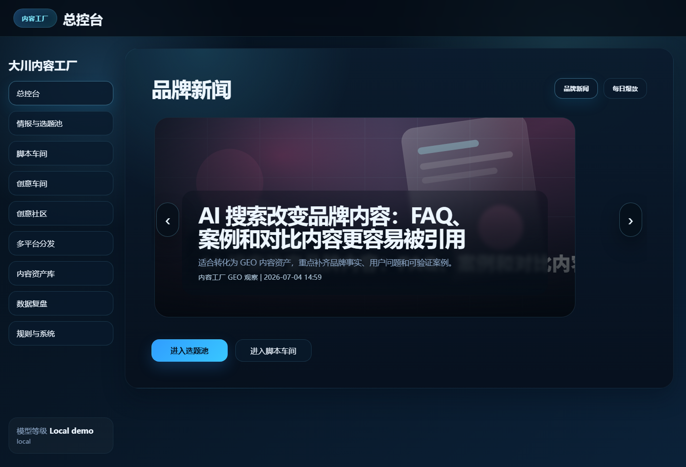

Trend and topic signals
Collect brand, platform, consumer, AI search, and community signals, then turn them into topic opportunities.
Jensenbox is a local-first operating system for brand operators and solo builders. It connects trend signals, topic judgment, script production, creative assets, distribution planning, and GEO asset building.

Jensenbox is not a generic AI text generator. It is designed around the real workflow of turning noisy public signals into publishable content and reusable brand assets.
Collect brand, platform, consumer, AI search, and community signals, then turn them into topic opportunities.
Generate platform-ready scripts, hooks, titles, cover directions, comment prompts, and GEO/FAQ drafts.
Create visual assets locally, preview finished outputs, add them to distribution, and save them into the asset library.
Turn public Chinese-language discussion signals into content ideas, script drafts, and creative workshop prompts.
Prepare platform variants before publishing. Publishing stays human-approved and account-safe.
Keep useful scripts, prompts, cases, FAQ, GEO material, and review notes reusable instead of buried in chat history.
Start from public signals, end with reusable assets. Each step is explicit enough for a solo creator and structured enough for a small team.
The first release is a Windows local-first MVP. No hosted backend is required.
git clone https://github.com/jensenyi/Jensenbox.git
cd Jensenbox
powershell.exe -NoProfile -ExecutionPolicy Bypass -File .\tools\server.ps1
# Open:
# http://127.0.0.1:4175/Star the repository on GitHub, share the link, or fork it and build your own content growth workflow.